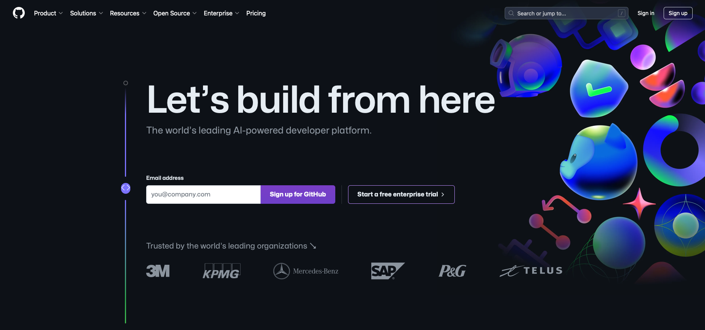

Open Science Essentials
NASA's Open Science initiative is transforming the scientific process by promoting transparency, collaboration, and inclusivity.
On this page
NASA’s Open Science Initiative. NASA is committed to fostering an inclusive Open Science community, promoting transparency, collaboration, and early sharing of data and research. This initiative, known as Open Source Science, aims to make all aspects of scientific research open and accessible from the start, encouraging a cultural shift in science.
Transform to Open Science Initiative. NASA’s TOPS initiative provides education and tools to help researchers and the public adopt Open Science practices. The free online course “Open Science 101” offers practical insights into these principles.
Prelude
NASA is at the forefront of a transformative movement in the scientific community — one that is rooted in the principles of openness, collaboration, and inclusivity. Over the next decade, NASA is making a long-term commitment to fostering an inclusive Open Science community, where the sharing of software, data, and knowledge happens as early as possible in the scientific process. This initiative, known as Open Science at NASA, represents a cultural shift that goes beyond just technological advancements.
Open Source Science: A Commitment to Transparency
Open-Source Science is NASA’s pledge to make the entire scientific process transparent, inclusive, accessible, and reproducible. This involves the open sharing of all aspects of research, including software, data, algorithms, papers, documents, and ancillary information, from the very beginning. By doing so, NASA is not just advancing technology but is also pushing for a cultural transformation in the way science is conducted.
The principles of open-source science are built on the idea that publicly funded research should be accessible to everyone. This openness allows for greater collaboration, reduces duplication of efforts, and broadens the user community. It also ensures that scientific research is reproducible, thereby increasing the reliability and impact of scientific findings.

Researcher carefully preparing samples in a laboratory setting, embodying the spirit of Open Science. By sharing data transparently and including diverse scientists in the process, NASA’s open-source science approach accelerates groundbreaking discoveries and fosters a more inclusive and collaborative scientific community. [1]
Transform to Open Science (TOPS) Initiative
To help the scientific community and the public adopt Open Science practices, NASA has launched the Transform to Open Science (TOPS) initiative [2]. This initiative aims to educate and empower researchers, academics, and the general public by providing them with the tools and knowledge they need to implement Open Science in their work. One of the key offerings of the TOPS initiative is “Open Science 101,” a free online training course that provides a practical understanding of Open Science principles.
The Benefits of Open Science
Open Science, when properly implemented, offers a multitude of benefits that can revolutionize the way research is conducted and utilized. Below are four key areas where Open Science makes a significant impact:

Researchers collaborate in fieldwork, studying geological formations in a remote landscape. This scene reflects NASA’s commitment to Open Science, where teamwork, transparency, and shared knowledge drive progress. It highlights how Open Science fosters inclusivity and collaboration, accelerating discovery and ensuring that scientific advances are accessible. [1]
Four key areas where Open Science makes a significant impact
Citizen Science Initiatives and Engagement: Open Science allows for greater participation from the public, enabling citizen scientists to contribute to research efforts and engage with scientific discoveries.
Lifesaving Access to Medical and Scientific Information: Open Science ensures that critical medical and scientific information is accessible to everyone, potentially saving lives by providing timely and accurate data.
Democratization of the Scientific Process: By making research accessible to all, Open Science democratizes the scientific process, giving everyone chance to contribute to and benefit from scientific advancements.
Increased Earth Observation Accessibility: Open Science expands access to Earth observation data, allowing more people to monitor and understan our planet.
Cleaner, More Secure Code with More Contributors: Open-source science invites a broader community to contribute to and improve scientific software, leading to cleaner, more secure code.
Long-Term Maintenance Assistance: The open-source model encourages long-term maintenance and support from the community, ensuring that tools and resources remain up-to-date and functional.
New Monetized Offices and Data Centers: Open Science can lead to the creation of new monetized opportunities, such as data centers, that support and enhance scientific research.
Transparent Research Spending: Open Science promotes transparency in research spending, making the allocation of funds more efficient and accountable.
Increased Transparency of Research Results: Open Science makes research results more transparent, allowing for easier verification and replication of studies.
Reliable Results Through Confirmation: The open sharing of data and methodologies enables other researchers to confirm findings, leading to more reliable and robust scientific outcomes.
Reduced Pressure for “Exciting” Research: By focusing on reproducibility and transparency, Open Science reduces the pressure to produce “exciting” results just to get published, fostering a more honest and rigorous scientific process.
More Robust Scientific Products: Open Science enhances the overall quality of scientific research, leading to more trustworthy and impactful results.
International Accessibility: Open Science ensures that scientific knowledge is accessible to researchers around the world, regardless of their location or resources.
Breaking Down Financial Barriers: Open Science helps to dismantle systemic financial barriers, allowing more people to participate in and benefit from scientific research.
Diversity Among Researchers: By making science more accessible, open science encourages greater diversity among researchers, leading to a richer and more inclusive scientific community.
Equitable Distribution of Opportunity: Open Science ensures that opportunities for research and collaboration are distributed more equitably, fostering a more inclusive and diverse scientific environment.
Through its Open Science initiative, NASA is leading the charge toward a more open, collaborative, and inclusive scientific community. By embracing these principles, the scientific community can accelerate progress, enhance the quality and reliability of research, and ensure that the benefits of scientific discovery are shared by all.
What you’ll need Beta
Before diving into the rich resources and collaborative projects that await you, there are a few essential steps to get started. Creating the necessary accounts will equip you with the tools you need to contribute to and benefit from this global movement. Don’t worry — whether you’re a seasoned researcher or new to the field, this guide will walk you through each step with ease. Let’s get started!
Accounts
GitHub is a platform where millions of developers and researchers collaborate on open-source projects. It’s a key tool in the Open Science toolkit, enabling you to share your code, collaborate with others, and contribute to existing projects.
GitHub isn’t just a repository for code; it’s a community. By creating a GitHub account, you’ll be joining a global network of scientists, developers, and enthusiasts who are committed to making science more transparent and collaborative.
Don’t have a GitHub account? Create yours now